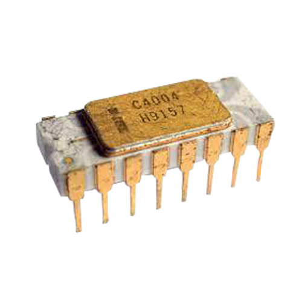

Microprocessors
Wat zijn microprocessors?
Microprocessors zijn de apparaatjes die in je computer zitten die alle data die binnenkomt en naar buiten gaat berekend.
Tegenwoordig zijn ze niet veel groter dan een pasfoto.
Vroeger waren ze een stuk kleiner maar dat komt ook doordat de processor toen nog heel langzaam was.
Tegenwoordig zijn ze veel sneller en moeten ze ook heel veel meer kunnen.
Vandaag de dag hebben processors ongeveer 1000 kleine pinnetjes, of contact punten waarmee ze contact maken met het moederboard.
In de eerste processor had er 16.
Dit zorgt er voor dat er heel veel meer data verstuurd en ontvangen kan worden.
In een processor zitten een paar onderdelen:
Er zit een metalen plaat bovenop om hitte van de chip naar de koeler over te brengen.
Op dit metalen plaatje staat ook alle informatie over de processor.
Onder de metalen plaat zit een silicium chip waar een circuit in zit met miljarden transistors.
Deze transistors kunnen of stroom door laten of niet (1 of 0) dit zorgt voor alle berekeningen die gedaan kunnen worden.
Op de processor zit ook vaak een cache, dit is supersnel geheugen dat direct door de rest van de cpu gebruikt kan worden.
geheugen
Dan is er iets langzamere maar nog steeds snel geheugen dat we RAM noemen (random acces memory) dit werkt het zelfde als de cache.
De data op de cache of de RAM wordt nadat het gebruikt is gelijk weer verweiderd.
Waar je al je foto's en video's opslaat heet de opslag, dit is de traagste vorm van geheugen.
Dit blijft ook voor altijd op de drive staan totdat jij het zelf verwijderd.
Koeling
De processor geeft een heleboel hitte af, daarvoor moet je een radiator met een ventilator er op zetten zodat alle hitte verdeeld wordt en de lucht in word gestuurd.
Om de hitte van de cpu naar de radiator te brengen wordt er koelpasta tussen gedaan dit zorgt er voor dat de twee metalen onderdelen goed contact maken.
Nu geven processors veel meer hitte af dan vroeger, er werd vroeger gewoon een hele kleine radiator op gemaakt door de fabriek waar de lucht gewoon tussen kon stromen.
Nu moet je nog een aparte radiator er zelf op zetten.
Bedrijven die CPU's verkopen
Er zijn twee bedrijven die CPU's maken en verkopen: Intel en AMD
Intel is voor het grootste gedeelte van de tijd de top keuze voor je processor.
Tegenwoordig is AMD iets sneller dan Intel maar het is een close race.
Allebij werken op ongeveer de zelfde manier.
AMD heeft wel net iets meer cores, een core laat zien hoe veel grote processen er tegelijkertijd uitgevoerd kunnen worden.
Intel is heeft iets meer snelheid per core.
AMD (advanced micro devises) heete eerst ATI-technologies.
Architechtures
In 1978 toen de Intel de 8086 processor uitbracht kreeg deze de x86 architechtuur.
Deze architechtuur wordt vandaag de dag nog gebruikt, een architechtuur is de manier hoe de chip in elkeer zit.
Intel verkocht deze manier om processors te maken aan andere bedrijven waaronder ook AMD.
Intel heeft een keer geprobeerd om de architechtuur te veranderen, maar omdat andere electronica die naast de processor ook nog nodig is, moest dan ook helemaal aangepast worden en dat zou heel duur worden.
Doordat AMD de architechtuur van intel had gekocht kreeg intel een flinke som geld op wat ze zelf aan processors verkochten.
Dit zorgde er voor dat Intel een behoorlijke voorsprong kreeg op AMD waardoor die niet meer bij konden blijven.
Intel heeft nu de voor een aantal jaar flinke voorsprong gehad.
Toen AMD met een nieuwe architechtuur kwam: zen, kwamen ze in 2017 weer bovenop.
Tot vandaag staan ze nogsteeds boven intel.
Geschiedenis
Voordat we de kleine processors hadden die we nu hebben, waren er hele kamers nodig om 'electronenbuizen' in te op te slaan.
De electronenbuizen hadden een vacuum binnenin, wat zorgde voor dat electronen tussen een gloeidraadje en een metalen plaatje konden beewegen.
Dit was een hele langzame manier van computéren, het was daarbij ook heel duur en dus groot, wat er voor zorgde dat alleen grote bedrijven het konden kopen.
Toen transistors werden uitgevonden zijn er een aantal bedrijven bezig geweest met het maken van microprocessors.
De eerste microprocessor is door Intel in 1969 gemaakt, deze was gemaakt voor een een rekenmachine.
Deze processor moest direct op het moederboard gesoldeerd worden.
In 1989 werd de eerste CPU (central processing unit) uitgebracht die niet op een moederboard gesoldeerd moest worden.
Je kon toen dus je processor upgraden zonder dat je je moederboard moet vervangen.
AMD en Intel kwamen in 2005 met de eerste multicore processors.
Dit had dubbel de processing power dan een single core processor.
Dat zorgt er ook voor dat er meer taken tegelijk gedaand konden worden.
Tegenwoordig zou je minimaal vier cores in je processor willen.
12 cores is de maximum in heel goede processors.
Als je echt wil zou je 64 cores kunnen vinden op een server processor, dat is wel behoorlijk duur.

Link met de robot van CLE
Wij gebruiken een Circuit Playground om onze robot te maken.
Er zit een microcontroller op.
Dit is een soort van processor die een stuk langzamer is en een stuk minder kan dan een CPU.
Het moet nogsteeds wel alle inputs en outputs berekenen.
Dus het doet wel het zelfde als een CPU maar net op een kleinere schaal.
Bronnenlijst